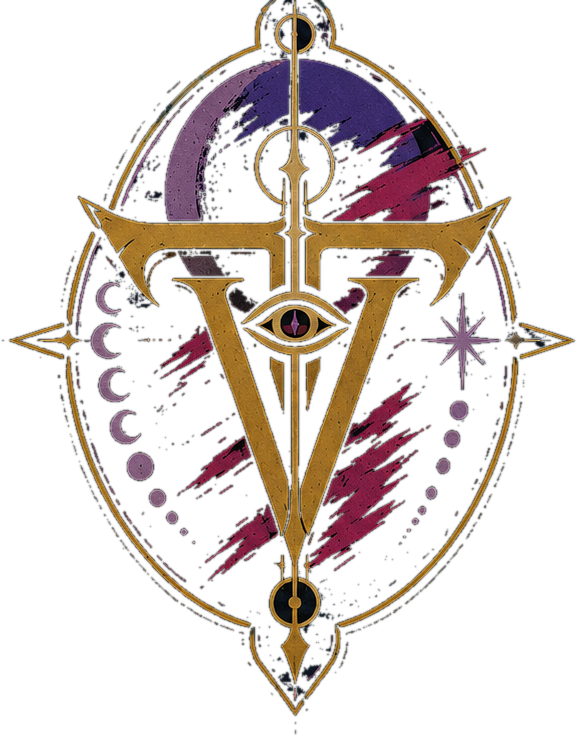
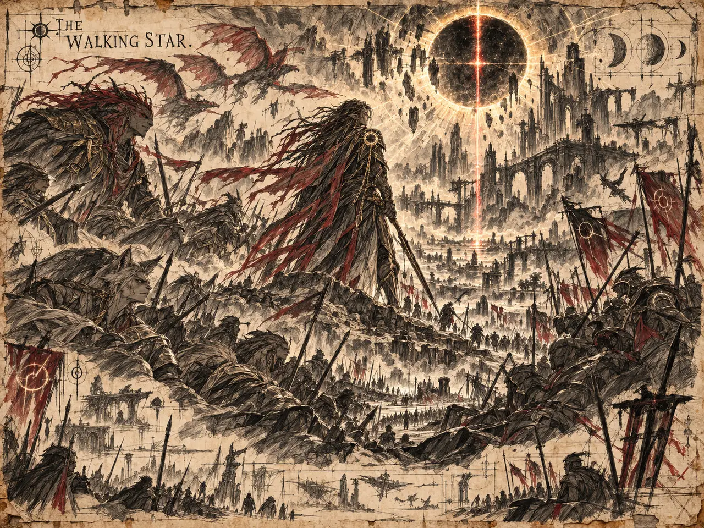
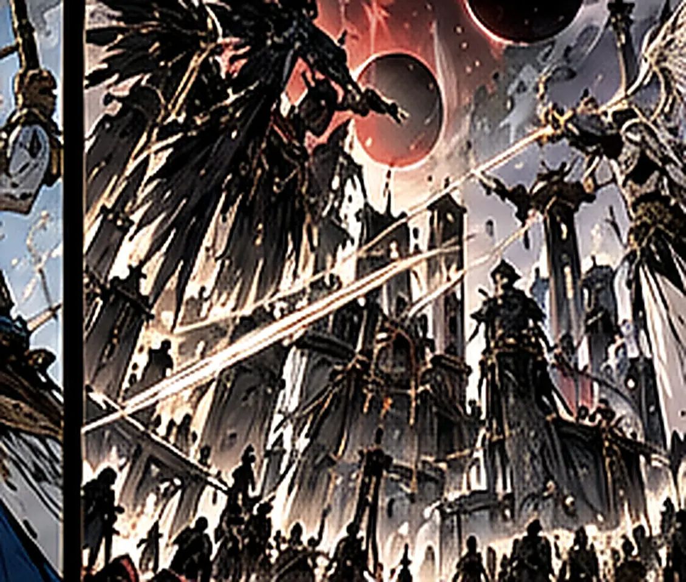
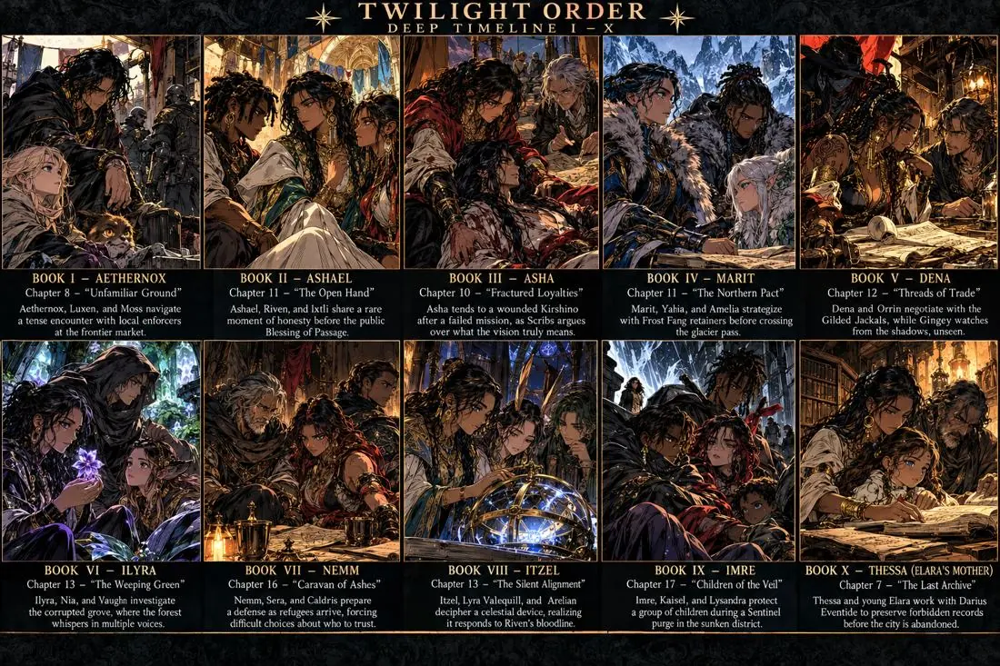

Twilight Veil Media
Twilight Veil Media

They held the twilight open.
An original dark fantasy franchise, in development as a light novel, a manga and anime, and a television series. Four nobodies in a Charlotte apartment try to pay rent and stay out of trouble, and become famous by accident, one impossible rumor at a time, until the hidden world learns their name.
Twilight Veil Media is the studio behind The Twilight Order. The franchise is built from a single master canon, the Master Codex, so that every book, episode and panel is measured against the same timeline, the same rulings and the same night an eleven-month-old rang a kingdom like a bell.
The Origins Saga: Book Zero and twelve founding introductions, plus the mentor and culture books.
The Season Spine, chapters 1–140, drawn from the Integration & Season Architecture.
Four seasons and eighteen arcs, from a name in the hidden world to the gathering of the war for the doorstep.

These characters are born centuries, sometimes eons, apart, yet they all arrive at one street in one present. The codex runs on two clocks that meet at Year 0, the day Riven consciously calls the blue flame and the story proper begins.
Backstory time, measured before the present. From before the first star through the Elder-Wilds collapse and the Vantari era, down to the twenty-two years that raised the living cast. Every origin book lives here. Read the Deep Timeline →
Present time, measured in chapters. One continuous run, Ch. 1–140, across four seasons and eighteen arcs, on Earth and in the Veil beyond it. This is where every backstory converges. Read the Season Spine →
19 dossier portraits and 21 codex entries: the founding cell, the Trinity, the Season Two arrivals, the four pillars, the mentors and the serpent. Open any card for a full life timeline, power system and entry point.


Only Seasons One and Four carry subtitles; Two and Three are titled by their arcs. Each season page shows exactly where every principal steps onto the page.
Four Coalition nobodies (Cell 9) try to pay rent and stay out of trouble — and become famous by accident, one impossible rumor at a time, until the finale hands them the name the franchise is titled after. Base: Apartment 304 , blocks from Riven's grandparents' antiquities shop.
Season One was the household; Season Two is the pack. The full roster assembles and turns frictional as two mythologized heirs — frost and blood — arrive, a season-long tracking mystery closes on the team, and the first Infernal House agents reach Earth.
With the full eleven assembled, the crew works Deep-Veil and buried-history mysteries while the Long Chase tightens — Riven's blood becomes known to everything that listens — and the season ends with the family reunion detonated as a cliffhanger.
The aftermath season — the people who come after the crew's loud last-second victories. The Veyr sisters (moon-ward "buriers") integrate as a chartered Guild lineage while the S3 cliffhanger detonates in slow motion: the parents are home and every faction converges. Not the war for the doorstep — the gathering of it.
"Leave your fear outside. Leave your pride outside. But never leave your name."
The Nomad OathThe Gilded Jackals are not an army. They are the hidden world's most successful acquisition house, led by a collector who wants to shelve the world rather than rule it.
The setting's oldest horror is not a faction that wants territory or thrones. It is a family that hunts identity.
Five deep storylines braid toward one cosmological answer: the eclipse-marked client, the cut seams, the sleeping gods and the compressing Veil are the same story.
No living mortal has seen the true Aethernox. Whenever he appears, he is simply Gingey: the traveler, the bridge-builder, the stranger feeding birds.
The Keeper of Forgotten Truths, and Gingey's counterpart.
How transcendence became inheritable: the Saurai and Kynari inheritances, and the living lineages that survive in the modern cast.
Backstory time, measured before the present: from before the first star through the Elder-Wilds collapse to the twenty-two years that raised the living cast.
The codex carries the franchise's visual bibles in full: 943 plates across the celestial, pestilence, atlas, realm, myth, nomad and bestiary archives, the complete visual archive and the Living Atlas continuity ledger. Tap any plate on its page to view it full-screen.

The Guardians of Doors — the celestial order that watches the thresholds between realms.
28 plates
Integrated visual edition of the forbidden histories: the plague-sovereigns and their factions.
86 plates
Collections 11–XLI of the antagonist archive, plate by plate.
229 plates
The living atlas of the cultures that share the hidden world.
Text atlas
Faction homelands, from the Solar Dominion to the Hanging Kingdom, mapped.
20 platesRealms, people, omens and legends, with the Living World addenda.
216 plates
Research plates, registers and field notes from the Nomad lands, Volumes I–II.
150 plates
Creature studies, ancient murals, field notes and Anima ecologies: eighteen illustrated species records.
18 plates
Ninety-four illustrations and extracted panels: chronicles, characters, Black Houses, war beasts, Veil gates and relics.
94 plates
Seventy illustrated windows through the long war, each with its moment, cause, consequence and continuity link.
70 plates
Thirty-two concept contact sheets, closing with the latest character interactions across Books I–X.
32 platesThe project resolves into one library. This is the order a new reader should move through it.
The keystone. Everything else in the saga is measured against the night an eleven-month-old rang a kingdom like a bell.
Riven, Arelion, Gingey, Vaughn, Scribs, Yahia, Kaisel, Asha, Amelia, Sanaa, Nia and Ixtli. Each standalone-readable.
Adair, Kirshino, Elara Ashveil, the Lunari, Kaisel's return and The Veil Lore Bible. Read after their linked origin book.
The Season One assembly, the Four Pillars addendum and the Gilded Jackals antagonist build.
Seasons Two to Four, the Ancient Plot Weave and the Consolidated Decision Ledger.